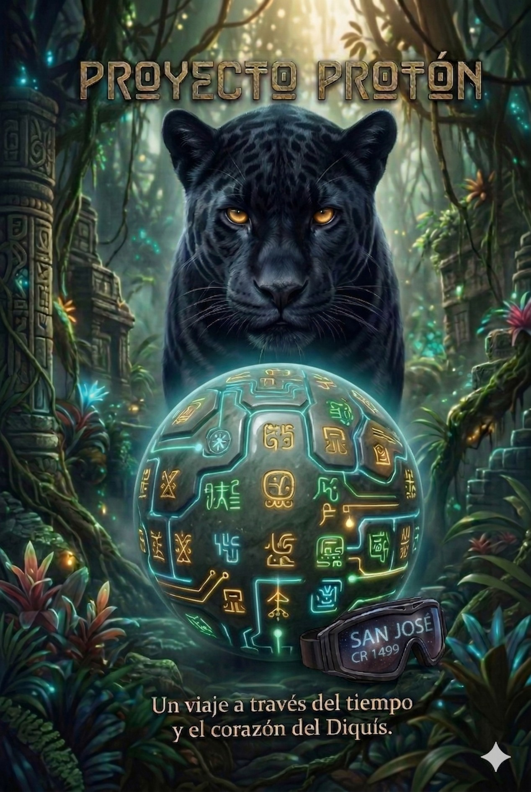

✨ UNIVERSO CANÓNICO · TRILOGÍA PROYECTO PROTÓN
Del Árbol de Ámbar al Corazón de las Gemas del Arcoíris
Explora el manuscrito íntegro del Libro 1 (CANON): Proyecto Protón, sigue la travesía de Protón (Don Paco), Nawa (Protón 2), el Doctor Miranda y los Cinco Hermanos de Talamanca, navega el mapa de relaciones libre de spoilers y consulta tus apuntes manuscritos de lore rumbo al Libro 2 y Libro 3.

📚 Arquitectura de la Saga (3 Libros)
Estructura organizada en la carpeta saga/ para consulta rápida de manuscritos, capítulos individuales, fichas de personajes y apuntes.
🔖 Mis Marcadores Guardados
Haz clic en 🔖 junto a cualquier párrafo para guardar o quitar un marcador
🧬 Biblia de Personajes & Mapa de Relaciones
Filtra el universo de personajes principales, secundarios y entidades. Ajusta el control anti-spoilers según el capítulo que estés leyendo para revelar únicamente los vínculos y biografías descubiertos hasta ese punto.
💎 Las 8 Gemas del Arcoíris (Canon)
Artefactos de consciencia forjados en el Árbol de Ámbar durante el sacrificio de Protón en el Capítulo 0 y despertados a lo largo de la saga.
📸 Bóveda de Fotografías y Apuntes a Mano del Autor
Espacio preparado para subir y previsualizar las fotografías de tus notas a mano sobre el lore de Proyecto Protón y las continuaciones de la saga.
También puedes guardar los archivos directamente en saga/lore_y_apuntes/fotos_apuntes_mano/.
📷 ✍️ 📓
Cargar Fotografías de Apuntes y Bocetos a Mano
Selecciona una o varias fotos desde tu equipo para visualizarlas en esta galería interactiva o compártelas directamente en el chat para transcribirlas a saga/lore_y_apuntes/transcripciones_apuntes/ e integrarlas al canon.